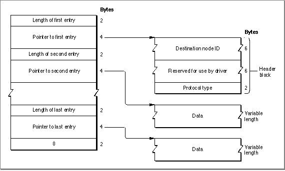

Using the Ethernet Driver
You can write your own protocol stack or application that uses the Ethernet driver directly rather than going through the LAP Manager. Apple provides an .ENET driver shell that locates and loads the driver for the selected Ethernet NuBus card. The driver shell searches the following locations for existing Ethernet driver resources, and it uses the most current one:See Designing Cards and Drivers for the Macintosh Family, second edition, for discussions of NuBus board IDs and slot resources.
- the system resource file
- the card's declaration ROM
- the motherboard's ROM
Opening the Ethernet Driver
Before you use the Device Manager'sOpenSlotfunction to open the .ENET driver, you use theSGetTypeSRsrcfunction described in the Slot Manager chapter of Inside Macintosh: Devices to determine which NuBus slots contain Ethernet cards. To find Ethernet NuBus cards, use the valuecatNetworkin the fieldspCategoryof theGetTypeSRsrcfunction parameter block, and use the valuetypeEthernetin the fieldspCType. If you cannot find any Ethernet NuBus cards, you should also attempt to open the .ENET0 driver in case non-NuBus Ethernet hardware is attached to the system.
You should provide a user interface that allows the user to select a specific Ethernet card in the case that more than one is present. (The chapter "Device Manager" in Inside Macintosh: Devices describes theOpenSlotfunction.)Listing 11-1 illustrates how to identify and open an Ethernet driver.
- Note
- This section refers to the .ENET driver shell, which facilitates multivendor support, as the .ENET driver. When you open the
.ENET driver shell, it loads and opens the particular card's driver.Listing 11-1 Finding an Ethernet card and opening the .ENET driver
FUNCTION Get_And_Open_ENET_Driver: Integer; VAR mySBlk: SpBlock; myPBRec: ParamBlockRec; myErr: OSErr; Found: Integer; ENETRefNum: Integer; EnetStr: Str15; Enet0Str: Str15; BEGIN Found := 0; {assume no sResource found} ENETRefNum := 0; {indicate no driver found} WITH mySBlk DO {set up the SpBlock} BEGIN spParamData := 1; {include search of disabled resources } { starting searching from spSlot and } { the slots above it} spCategory := catNetwork; spCType := typeEthernet; spDrvrSW := 0; spDrvrHW := 0; spTBMask := 3; {match only Category and } { CType fields} spSlot := 0; {start search from here} spID := 0; {start search from here} spExtDev := 0; {ID of the external device} END; . . {REPEAT} . {At this point you could implement a repeat loop to check } { for multiple Ethernet cards. This sample uses the first card.} . myErr := SGetTypeSRsrc(@mySBlk); IF myErr = noErr THEN {found an sResource match; } { save it for later} BEGIN Found := Found + 1; (SaveSInfo(@mySBlk); {save slot info for later use} END; {until myErr = smNoMoresRsrcs;} IF Found > 1 THEN BEGIN {If you find more than one sResource, put up a dialog box } { to let the user select one. If any of the sResources } { that you found were disabled, let the user know that they } { are not available.} {This code sample assumes that the selected slot is } { returned in mySBlk.spSlot, that the corresponding } { sResource ID is returned in mySBlk.spID, and that Found } { remains > 1 to indicate that it is okay to open the } { driver.} END; IF found <> 0 THEN BEGIN EnetStr := '.ENET'; WITH myPBRec DO BEGIN ioCompletion := NIL; {call made synchronously} ioNamePtr := @EnetStr; ioPermssn := fsCurPerm; ioFlags := 0; {reserved for driver use} ioSlot := mySBlk.spSlot; {slot of Ethernet card to open} ioID := mySBlk.spID; {sResource ID for slot} END; myErr := OpenSlot(@myPBRec, FALSE); IF myErr = noErr THEN ENETRefNum := myPBRec.ioRefNum; END ELSE BEGIN Enet0Str := '.ENET0'; myErr := OpenDriver(Enet0Str, ENETRefNum); END; IF myErr <> noErr THEN DoError(myErr); {handle the error} Get_And_Open_ENET_Driver := ENETRefNum; {return the refNum or } { 0 if unsuccessful} END;Using a Write-Data Structure to Transmit Ethernet Data
You use theEWritefunction to send data to the .ENET driver for transmission over the Ethernet network. When you do this, you provide a pointer to a write-data structure containing one or more pairs of length words and pointers. (Figure 11-3 shows multiple pairs.) Each pair indicates the length and location of a portion of the data packet to be sent over the network. The first length-pointer pair points to a header block that is at least 14 bytes long and that starts with the destination node hardware address. Note that this is not the AppleTalk address, but is the hardware address of the destination node. (Note that this address can also be a multicast address or the broadcast address for the link type.)The next 6 bytes of the header block are reserved for use by the .ENET driver. These bytes are followed by the 2-byte Ethernet protocol type field (Ethernet Phase 2 packets use this field to indicate the amount of data in the packet). Data may follow the header block; all other length-pointer pairs point to data. The write-data structure terminates with a 0 word.
When you first open the .ENET driver, it allocates a 768-byte buffer that it uses for transmitting data packets. This buffer is large enough to hold the largest EtherTalk packet, which is 621 bytes in size. If you want to transmit data packets larger than 768 bytes, call the
- Note
- Instead of using multiple buffers and length-pointer pairs, you can create a write-data structure that consists of a single buffer that specifies the header block followed directly by the data. For more information about write-data structures, see the chapter "Datagram Delivery Protocol (DDP)" in this book.
ESetGeneralfunction; the .ENET driver can then allocate a data buffer large enough to send packets up to 1514 bytes in size. Figure 11-3 shows the write-data structure that you use to send data to the .ENET driver.Figure 11-3 An Ethernet write-data structure

The sample code in Listing 11-2 uses a multicast address instead of a local hardware address. The multicast address is a packet array that is defined as follows:
VAR gMultiCastAddr: PACKED ARRAY[0..5] OF Byte;The following procedure initializes thegMultiCastAddrglobal variable:PROCEDURE Init_Multicast_Address; BEGIN gMultiCastAddr[1] := $09; gMultiCastAddr[2] := $00; gMultiCastAddr[3] := $2B; gMultiCastAddr[4] := $00; gMultiCastAddr[5] := $00; gMultiCastAddr[6] := $04; END;The code in Listing 11-2 defines an Ethernet write-data structure, and then it calls theEWritefunction to send a data packet over Ethernet.Listing 11-2 Sending a data packet over Ethernet
FUNCTION Send_Sample_ENET_Packet (ENETRefNum: Integer): OSErr; CONST kSIZE1 = 100; kSIZE2 = 333; TYPE WDS = RECORD {write-data structure} length: Integer; {length of nth entry} aptr: Ptr; {pointer to nth entry} END; VAR myWDS: ARRAY[1..4] OF WDS; myPB: EParamBlock; {.ENET parameter block} wheader: PACKED ARRAY[0..13] OF Byte; stuff1: ARRAY[1..kSIZE1] OF Byte; stuff2: ARRAY[1..kSIZE2] OF Byte; myErr: OSErr; BEGIN BlockMove(@gMultiCastAddr, @wheader, 6); {multicast address} wheader[12] := $90; {protocol type} wheader[13] := $90; {must match kProtocol value} myWDS[1].length := 14; myWDS[1].aptr := @wheader; myWDS[2].length := kSIZE1; myWDS[2].aptr := @stuff1; myWDS[3].length := kSIZE2; myWDS[3].aptr := @stuff2; myWDS[4].length := 0; myPB.ePointer := @myWDS; myPB.ioRefNum := ENETRefNum; {Send something.} myErr := EWrite(@myPB, FALSE); IF myErr <> noErr THEN DoError(myErr); Send_Sample_ENET_Packet := myErr; END;Using the Default Ethernet Protocol Handler to Read Data
This section describes how to write an application that uses the Apple default protocol handler for Ethernet Phase 1 packets. For Ethernet Phase 2 packets, the process is largely the same, except that you must code and provide your own protocol handler and use the LAP Manager to attach it.When the Ethernet NuBus card or other Ethernet hardware receives a data packet, it generates an interrupt to the CPU. The interrupt handler in ROM determines the source of the interrupt and calls the .ENET driver. The .ENET driver reads the packet header
to determine the protocol type of the data packet and checks to see if any client has specified that protocol type in a call to theEAttachPHfunction. If so, the client either specified aNILpointer to a protocol handler or provided its own protocol handler. If the client specified aNILpointer, the .ENET driver uses its default protocol handler to read the data. If no one has specified the protocol type that the packet header contains in a call to theEAttachPHfunction, the .ENET driver discards the data. (For more informa-
tion about theEAttachPHfunction, see "EAttachPH" on page 11-28.)The Ethernet driver looks for a pending
EReadfunction with a protocol type that matches the packet protocol type. (When you call theEReadfunction, you pass it a protocol type.) The Ethernet driver places the entire packet--including the packet header--into the buffer specified by that function. The function returns the number of bytes actually read. If the packet is larger than the data buffer, theEReadfunction places as much of the packet as will fit into the buffer and returns thebuf2SmallErrresult code.You must call the
EReadfunction asynchronously to await the next data packet. When the .ENET driver receives the data packet, it completes execution of theEReadfunction and calls your completion routine. Your completion routine should call theEReadfunction again so that anEReadfunction is always pending execution. If the .ENET driver receives a data packet with a protocol type for which you specified the default protocol handler while noEReadfunction is pending, the .ENET driver discards the packet.You can have several asynchronous calls to the
EReadfunction pending execution simultaneously as long as you use different buffers and a different parameter block
for each call.Alternatively, after the
EReadfunction completes execution, you can call the function again from your completion routine, and reuse the same parameter block. This is the approach the code in Listing 11-3 takes.The code in Listing 11-3 calls the
EAttachPHfunction to specify that the .ENET driver should use the default protocol handler to process packets for the protocol type defined by the following constant:CONST kMyProtocol = $9090; {must be > $5DC}In practice, you should call theEAttachPHfunction very early, during your program initialization sequence, if possible. As soon as the connection is established and you
are expecting data, you should call theEReadfunction asynchronously. The code in Listing 11-3 shows how to attach a protocol handler and read a packet for an Ethernet Phase 1 packet.Listing 11-3 Attaching a protocol handler and reading a packet
FUNCTION Sample_AttachPH_And_Read_Packet (ENETRefNum: Integer): OSErr; CONST kBigBytes = 8888; VAR myPB: MyEParamBlock; myEPBPtr: MyEParamBlkPtr; aptr: Ptr; myErr: OSErr; BEGIN myEPBPtr := @myPB; {set up EAttachPH parameters} WITH myPB.pb DO BEGIN eProtType := kMyProtocol; {protocol type} ePointer := NIL; {use default protocol handler} ioRefNum := ENETRefNum; {.ENET driver reference number} END; myErr := EAttachPH(EParamBlkPtr(myEPBPtr), FALSE); IF myErr <> noErr THEN {check if error occurred while } DoError(myErr) { attaching protocol handler} ELSE BEGIN aptr := NewPtr(kBigBytes); myPB.myA5 := SetCurrentA5; {store the current A5 world} WITH myPB.pb DO BEGIN ioCompletion := @MyCompRoutine; {ptr to completion routine} eProtType := kMyProtocol; {protocol type to respond to} ePointer := aptr; {pointer to read-data buffer} eBuffSize := kBigBytes; {size of read-data buffer} ioRefNum := ENETRefNum; {.ENET driver refNum} END; myErr := ERead(EParamBlkPtr(myEPBPtr), TRUE); IF myErr <> noErr THEN {check if error occurred queueing read request} BEGIN DoError(myErr); {process error result} Detach_SamplePH(ENETRefNum); {detach protocol handler) END; END; Sample_AttachPH_And_Read_Packet := myErr; END;When the .ENET driver receives a packet, it then calls your completion routine if you called theEReadfunction asynchronously and theioCompletionroutine field is notNIL. Your completion routine should process the packet, after which it can then queue another asynchronous call to theEReadfunction to await the next packet.The sample completion routine that Listing 11-4 shows uses the following inline function that gets the pointer to the parameter block from register A0.
FUNCTION GetParamBlockPtr: Ptr; INLINE $2E88; {MOVE.L A0,(SP)}Because register A0 is a utility register that compilers often use for their own purposes, the sample code uses the following stub completion routine technique to minimize the possibility that a compiler will overwrite the value in register A0. The stub completion routine callsGetParamBlockPtrand then calls the actual completion routine.PROCEDURE MyStubCompRoutine; VAR myEPBPtr: MyEParamBlkPtr; BEGIN myEPBPtr := MyEParamBlkPtr(GetParamBlockPtr); {get parameter block pointer from register A0} myCompRoutine(myEPBPtr); {now call the actual completion routine} END;Listing 11-4 shows the actual completion routine that the stub completion routine calls. This completion routine reuses the original parameter block when it calls theEReadfunction again. The code also shows how to access global variables from within the completion routine. Note that if you call theEReadfunction from within the completion routine, you must call the function asynchronously. You must not call theEReadfunction synchronously at interrupt time.Listing 11-4 Completion routine to process received packet and await the next packet
PROCEDURE MyCompRoutine (myEPBPtr: MyEParamBlkPtr); VAR myErr: OSErr; saveA5: LongInt; aptr: Ptr; BEGIN saveA5 := SetA5(myEPBPtr^.myA5); {set A5 to our world} IF (myEPBPtr^.pb.ioResult < noErr) THEN {was ERead successful?} BEGIN IF (myEPBPtr^.pb.ioResult <> reqAborted) THEN {was request aborted?} DoError(myEPBPtr^.pb.ioResult) END ELSE BEGIN {process the packet} aptr := myEPBPtr^.pb.EPointer; ProcessData(aptr); {use the data} END; IF NOT gDone THEN {check if we have been called} BEGIN {if not, call ERead again} myErr := ERead(EParamBlkPtr(myEPBPtr), TRUE); IF myErr <> noErr THEN DoError(myErr); {check if error occurred while } { queueing call to ERead} END; saveA5 := SetA5(saveA5); {restore the A5 world} END; {of MyCompletion routine}Using Your Own Ethernet Protocol Handler to Read Data
If a client of the .ENET driver has used theEAttachPHfunction to provide a pointer to its own protocol handler, the .ENET driver calls that protocol handler, which must in turn call the .ENET driver'sReadPacketandReadRestroutines to read the data. Your protocol handler calls these routines in essentially the same way as you called these routines to implement a DDP socket listener. (The chapter "Datagram Delivery Protocol [DDP]" describes how you use these routines to implement a DDP socket listener.)The following sections describe how the .ENET driver calls a custom protocol handler and the
ReadPacketandReadRestroutines.
- Note
- Because an Ethernet protocol handler must read from and write to
the CPU's registers, you must write the protocol handler in assembly language; you cannot write a protocol handler in Pascal.How the .ENET Driver Calls Your Protocol Handler
You can provide an Ethernet protocol handler for a particular protocol type and use theEAttachPHfunction to attach it to the .ENET driver. When the driver receives an Ethernet packet, it reads the packet header into an internal buffer, reads the protocol type, and calls the protocol handler for that protocol type. The CPU is in interrupt mode, and the registers are used as follows:
Registers on call to Ethernet protocol handler A0 Reserved for internal use by the .ENET driver (You must preserve this register
until after theReadRestroutine has completed execution.)A1 Reserved for internal use by the .ENET driver (You must preserve this register
until after theReadRestroutine has completed execution.)A2 Free for your use A3 Pointer to first byte past data-link header bytes (the first byte after the 2-byte
protocol-type field)A4 Pointer to the ReadPacketroutine (TheReadRestroutine starts 2 bytes
after the start of theReadPacketroutine.)A5 Free for your use until after the ReadRestroutine has completed executionD0 Free for your use D1 Number of bytes in the Ethernet packet left to be read (that is, the number of
bytes following the Ethernet header)D2 Free for your use D3 Free for your use If your protocol handler processes more than one protocol type, you can read the protocol type field in the frame header to determine the protocol type of the packet.
The protocol-type field starts 2 bytes before the address pointed to by the A3 register.After you have called the
- Note
- The source address starts 8 bytes before the address pointed to by
the A3 register, and the destination address starts 14 bytes before
the address pointed to by the A3 register.ReadRestroutine, you can use registers A0 through A3 and D0 through D3 for your own use, but you must preserve all other registers. You cannot depend on having access to your application global variables.How Your Protocol Handler Calls the .ENET Driver Routines
Your protocol handler must call the .ENET driver routinesReadPacketandReadRestto read the incoming data packet.You may call the
- Note
- Before the Ethernet driver calls your protocol handler at interrupt time, you must have already allocated memory for one or more data buffers
to hold the incoming data.ReadPacketroutine as many times as you like to read the data piece by piece into one or more data buffers, but you must always use theReadRestroutine to read the final piece of the data packet. TheReadRestroutine restores the machine state (the stack pointers, status register, and so forth) and checks for error conditions.Before you call the
ReadPacketroutine, you must place a pointer to the data buffer in the A3 register. You place the number of bytes you want to read in the D3 register. You must not request more bytes than remain in the data packet.To call the
ReadPacketroutine, execute a JSR instruction to the address in the A4 register. TheReadPacketroutine uses the registers as follows:
Registers on entry to the ReadPacketroutineA3 Pointer to a buffer to hold the data you want to read D3 Number of bytes to read; must be nonzero
Registers on exit from the ReadPacketroutineA0 Unchanged A1 Unchanged A2 Unchanged A3 First byte after the last byte read into buffer D0 Changed D1 Number of bytes left to be read D2 Unchanged D3 Equals 0 if requested number of bytes were read, nonzero if error The
ReadPacketroutine indicates an error by clearing to 0 the zero (z) flag in the status register. If theReadPacketroutine returns an error, you must terminate execution of your protocol handler with an RTS instruction without callingReadPacketagain or callingReadRestat all.Call the
ReadRestroutine to read the last portion of the data packet, or call it after you have read all the data withReadPacketroutines and before you do any other processing or terminate execution. You must provide in the A3 register a pointer to a data buffer and must indicate in the D3 register the size of the data buffer. If you have already read all of the data with calls to theReadPacketroutine, you can specify a buffer of size 0.To call the
- WARNING
- If you do not call the
ReadRestroutine after your last call to theReadPacketroutine, the system will crash.ReadRestroutine, execute a JSR instruction to an address 2 bytes past the address in the A4 register. TheReadRestroutine uses the registers as follows:
Registers on entry to the ReadRestroutineA3 Pointer to a buffer to hold the data you want to read D3 Size of the buffer (word length); may be 0
Registers on exit from the ReadRestroutineA0 Unchanged A1 Unchanged A2 Unchanged A3 Pointer to first byte after the last byte read into buffer D0 Changed D1 Changed D2 Unchanged D3 Equals 0 if requested number of bytes were read; less than 0 if more data was
left than would fit in buffer (extra data equals -D3 bytes); greater than 0 if less data was left than the size of the buffer (extra buffer space equals D3 bytes)The
ReadRestroutine indicates an error by clearing to 0 the zero (z) flag in the status register. You must terminate execution of your protocol handler with an RTS instruction whether or not theReadRestroutine returns an error.Changing the Ethernet Hardware Address
Each Ethernet NuBus card or other Ethernet hardware interface device contains a unique 6-byte hardware address assigned by the manufacturer of the device. The .ENET driver normally uses this address to determine whether to receive a packet. To change the hardware address for your node, place in the System file a resource of type'eadr'with a resource ID equal to the slot number of the Ethernet NuBus card.The
'eadr'resource consists only of a 6-byte number. Do not use the broadcast address or a multicast address for this number. (Refer to Inside AppleTalk, second edition, for the broadcast and multicast address formats.)When you open the .ENET driver, it looks for an
'eadr'resource with the resource ID that matches the slot number of the card. If it finds one, the driver substitutes the number in this resource for the Ethernet hardware address and uses it until the driver is closed or reset.
- Note
- To avoid address collisions, you should never arbitrarily change the Ethernet hardware address. This feature should be used only by a system administrator who can keep track of all the Ethernet addresses
in the system.